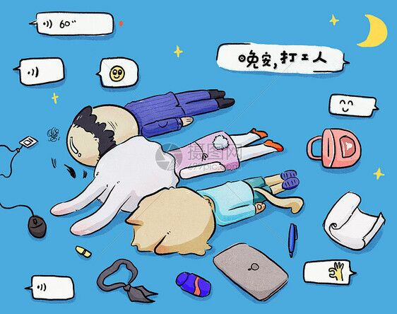
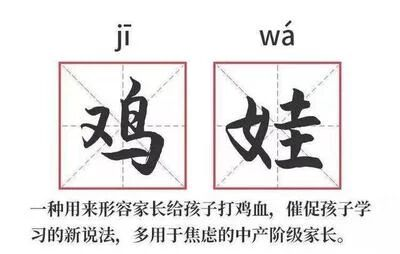
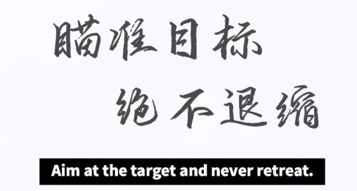

以理性“止卷”，以“内卷”励志
——读短痛《跑》有感
自“内卷元年”2020年以来，“内卷”一词热度不退，不仅成为2020年度热词，更是彻底出圈、在各个领域被频繁提及，似乎“万物皆可卷”。对于“内卷”的利弊，一直也是众说纷纭，莫衷一是。但《跑》中所有人无休止而又无意义的奔跑，让我觉得，当代青年应当“以理性‘止卷’，以‘内卷’励志”。
为何要“止卷”？要回答这个问题，先来看一个例子吧。《名侦探学院》第四季播出后，其中的“内卷”让人感慨不已。节目中，各高校的学霸校草们为了找宝藏，使出浑身解数：互相套话诓骗盯梢，徒步数公里，狂飙影帝般演技，凌晨零点外出寻找线索，三四点钟还不睡觉……实在令人叹为观止。有没有联想到你半夜偷偷学习还装成绩差的“凡尔赛”同学呢？然而即使众人如此努力，依然只有一个人能得到宝藏，完美诠释了“内卷”的含义。从定义上看，“内卷”即“内卷化”，译自英语involution，本是社会学术语，指一种社会或文化模式在发展到一定阶段后停滞不前，或无法转化为更高级模式的现象。既是“停滞不前”，可见其对社会发展并无益处，自然需要“止卷”来推动社会进步。

那么又如何“止卷”呢？这时候就需要以理性的利刃来攻破内卷的城墙了。倘若你半夜醒来发现舍友还在写作业，就在焦虑不安之下也下床写起作业，那么结果很可能是你第二天上课睡着了，有个知识点完全不懂，作业效率大大降低，不得不继续熬夜，第三天又上课睡着，如此恶性循环，最终不仅你的成绩停滞不前，还弄坏了自己的身体，多么不值得啊！但如果你理性思考，从本心出发呢？你会发现，透支身体学习根本不是你想要的。于是你会选择继续睡觉，第二天精神饱满地继续努力学习，查漏补缺，不仅能够提高成绩，也有了一个好身体，毕竟身体才是革命的本钱啊！上面这个例子虽然是虚构的，但是小到作业的完成，大到论文的评优、公司offer的竞争，类似的事，每个人都会遇到。

经济学家薛兆丰曾发表过一句“残酷”的金句：“让你加班的不是你的老板，而是其他愿意加班的人。”可见“内卷”的根源是人们对于竞争的一种焦虑不安的情绪。如此也就不难理解为何《小舍得》反响强烈，为何家长对于“一半学生上不了普通高中”的消息感到恐慌了。揠苗助长，只会让秧苗枯死；过度“鸡娃”，只会把孩子养废；盲目竞争，只会把自己累坏。因此，面对“内卷”，应该让理性长驻心灵，在理性思考后再作出决定，最后付诸行动，以理性“止卷”。
然而，从另一方面看，“内卷”乃大势所趋，并非个人努力可逆转的。《爱丽丝镜中奇遇记》中，红皇后对爱丽丝答道：“在这个国度中，必须不停地奔跑，才能使你保持在原地。”这告诉我们，在一个前进的社会中，不动便相当于后退。因此，我们应“顺大潮，逆小潮”，在内卷大潮中保持理性，同时以内卷来激励自己向更好努力。在线教育程序员Yuanbow清醒认识到，大家都挤破头走的那条路不是他想要的，于是毅然放弃在大公司的非常累的工作，选择了一家较小的公司，让自己的工作压力不那么大。他没有为别人“不思进取”的谴责声所吓退，还会在周末去踢球、吹哨或是健身，让生活充实快乐又有意义。他说：“我觉得并不存在所谓的‘放弃一条本该走的路’，从小到大一路走来我都走在正确的路上，现在我有选择自己那条路的权利和自由。”他非常清醒理性，知道自己志在何方，没有一味“内卷”，成就了自己的美好生活，谁能说这不是一种智慧呢？但他也说了：“就算我再不喜欢也不可能放弃职场，那是让我持续成长和发展的东西。”可见他也在用内卷激励自己，让自己不断成长。
